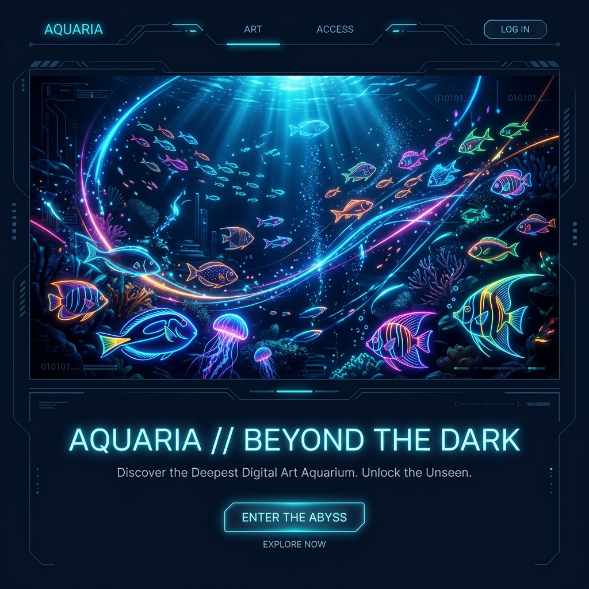

おえかき水族館
Beyond The Display
自分で描いた魚が巨大な仮想水槽を泳ぎ回る。1台のBunサーバーと複数のPixiJSクライアントを繋ぐ、生物物理シミュレーションと分散レンダリングを追求した水槽展示システム。

3つの中心概念
このシステムを安定稼働させ、柔軟なマルチディスプレイ構成を実現するために定義された、結合度の低いクリーンな抽象設計。
水槽 (World)
魚や背景画像、障害物、放流位置などが存在する「物理次元としての二次元空間」。画面の解像度とは完全に独立しており、座標値（例: 4000x1500）のみで表現されます。
physics/world.tsディスプレイ (Viewport)
巨大な水槽空間の「一部を切り取る窓」。物理解像度に依存せず、自身が水槽座標のどこからどこまで（Viewport）を描画するかだけを担当し、座標変換を行います。
frontend/display/renderer.ts魚 (Fish)
水槽空間内を泳ぎ回る独立した生物エンティティ。現在位置や速度はサーバーが約60fpsで物理演算し、ディスプレイは送られてきた世界座標を描画するだけに徹します。
shared/types.ts自律する5つの生物物理モデル
おえかき水族館の魚たちは、単なる等速直線運動ではありません。各種の生態にアプローチした数理モデルを実装し、滑らかな生物的ゆらぎを描き出します。
マグロ // Kick-and-Glide Model
高速で力強く、ほぼ水平に泳ぎ続ける回遊魚モデル。
- Kick-and-Glide 推進: 尾鰭を振る位相（Burst Phase）に同期して、蹴り出しの瞬間的な加速と滑空（Glide）による抵抗減速を周期的に繰り返し、リアルな推進トルクを表現。
- 水平維持の拘束力: 基本的な水平巡航を保つため、縦（Y方向）の最大速度制限を厳しく（横速度の22％に）制限。
- 自律的な深度チェンジ:
depth-behaviorに基づくバイオリズムによって、一定時間ごとにY軸の遊泳レーンを自律的に切り替えます。
イワシの群れ // FOV-limited Boids Model
視野角制限を加えた高度なBoids（群れ）アルゴリズムモデル。
- 視野角制限 (FOV): 進行方向から「背後120度（内積 < -0.5）」に位置する他魚を視界から除外。これにより、球体に集まるのではなく、前の魚の軌跡へ順繰りに追尾する自然な「帯状の潮流（ストリーム）」を形成。
- 個体別の巡航速度ゆらぎ: 各個体に
0.75〜1.25のランダムな巡航速度係数（personalSpeed）を設定し、群れの中で魚同士が追い越し・追い越されるリアルな前後移動を表現。 - 同調性（Alignment）の強化: 群れ全体の進行方向の同調重みを高め、潮流としての一体感を際立たせています。
イカ // Jet Pulse & Spring Hovering
休止とパルス推進（漏斗からの噴射）を繰り返す独特の遊泳モデル。
- 間欠的なパルス推進: サイクル全体の25%の期間のみ急加速（漏斗噴射）し、それ以外の期間は水の抵抗によるドラッグ（慣性スライド）で減速するメリハリのある動き。
- 弾性ホバリング: Y方向は、目標深度（baseY）にスプリング力（ばねの弾性追従力）で緩やかに引き寄せることで、推進時の急上昇と、その後に慣性でふわふわと揺らぎながらホバリングする様子を表現。
- 自律ベースラインドリフト: 基準となる深度（baseY）自身が常にゆっくりと不規則に上下することで、不自然な規則的振動を排除。
クラゲ // Asymmetric Jet-and-Sink Model
傘を開閉して水を押し出し、その後ゆっくりと沈んでいく非対称推進モデル。
- 推進期と弛緩期の完全分離: 周期の25%を「推進期（Jet）」、75%を「弛緩期（Sink）」に設計。推進期は上方向へ急峻なSin半周期の推進力を与え、弛緩期は自重によってゆっくり沈降。
- 動的ばね定数（springK）制御: 推進期は目標Y座標への引き寄せばね定数を強く（`0.018`）して急上昇させ、弛緩期は極めて弱く（`0.004`）することで、慣性沈降を邪魔しないフワフワとした下降を実現。
- 潮流でのゆらゆらドリフト: 水平方向にはほぼ推進力を持たず、微小なSin波の揺らぎと潮流に身を任せてゆっくり流される演出。
サメ // Angular Velocity Inertia Model
角速度の慣性を利用し、絶対に急カーブしない大弧単独回遊モデル。
- 角速度慣性物理: サメの進行方向角度の更新に「角加速度制限（慣性）」を導入。前フレームの角速度を90％維持しながら操舵力を蓄積するため、巨大魚らしい重厚で優雅な旋回を実現。
- 流れるような衝突回避: 壁や進入禁止エリア付近に接近した際も、角速度の慣性を経て大回りで回避方向へ舵を切るため、挙動がカクカクせず非常に美しい回避軌道を描きます。
- 巨大生物のプレイン制御: 水平のうねり移動を基本とし、縦の挙動はなだらかに抑制。
奥行きを創り出すダイナミック・レイヤーシステム
おえかき水族館は、前景・中景・遠景のレイヤーシステムと「ところてん方式」の動的配分によって、圧倒的な奥行き感（立体感）を創り出しています。
Scale: 1.0 (標準サイズ)
Opacity: 1.0 (はっきり)
Speed: 1.0 (手前は速い)
Scale: 0.7 (少し小さく)
Opacity: 0.8 (やや透明)
Speed: 0.6 (適度な視差)
Scale: 0.4 (小さく遠くに)
Opacity: 0.4 (霧のように霞む)
Speed: 0.3 (ゆっくり動く)
立体的なパララックス効果と自動負荷制御
サーバー側の layer-manager.ts は、水槽内の魚たちをダイナミックに制御する以下の機能を備えています。
ところてん方式の自動割り当て
新しく魚が放流されると、新しい順に「前景 → 中景 → 遠景」へと割り当てられます。定員（合計80枠）から溢れた最も古い魚は、自動的に非表示（isAutoHidden = true / Opacity = 0）になり、水槽内の混雑と描画負荷を完全に自動で調整します。
ピン留め機能 (isPinned)
管理画面から「ピン留め」されたお気に入りの魚は、ところてん方式の玉突き枠移動から除外され、指定したレイヤーに永続的に表示され続けます。
視差効果（パララックス）の反映
レイヤーが奥に行くほど、Scale (縮小)、Opacity (半透明化)、Speed (速度低下) が乗算されます。この速度減衰によって発生する視差効果が、ディスプレイ越しに本物の水槽を覗いているような深い立体感を生み出します。
分散リアルタイムアーキテクチャ
単一のBun/Honoサーバーが物理演算と状態を管理し、複数の独立したディスプレイクライアントへWebSocketで座標をミリ秒単位でストリーミングします。
サーバー主導・クライアント補間の極意
魚の泳ぎロジックや衝突判定はすべてサーバー側で集中処理されます。クライアント側（ディスプレイ）は、サーバーから送られてくる魚座標情報（目標値）に対し、PixiJSのレンダリングループを用いて補間（Lerp）を実行。これにより、ネットワークパケットの揺れや遅延に左右されない、滑らかで美しい60fpsの表現力を実現しました。
-
1
Bun native WebSocket 通信
Hono & Bun の高速なバイナリ/テキストソケットを利用し、クライアントへ高速配信。
-
2
PixiJS 8 WebGLレンダラー
最新のPixiJS 8を採用し、グラフィックボードの力を最大限に活かした超高速描画。
-
3
座標変換とViewport制御
Displayをドラッグするだけで、複数モニターにまたがる巨大パノラマ水槽をリアルタイムに構築可能。
Scanner / AI Node
rembg (背景透過)Controller
魚の編集・放流Bun Server (Hono)
物理演算ループ (16ms) // WebSocket配信Display A (PixiJS)
Viewport x: 0~1920Display B (PixiJS)
Viewport x: 1920~3840システムに込められた技術的こだわり
コードの細部に宿る、生物的表現への探究心と展示運用における高い堅牢性の設計。
視野制限(FOV)付きBoids物理
通常のBoids（分離・整列・結合）に「視野角制限（Field of View）」を実装。背後120度の他魚をブラインドにすることで、単なる球体の集まりではなく、先頭を追うような美しい「帯状のストリーム（潮流）」を描く群れを数学的に実現しています。
イカのパルス推進と弾性ホバリング
イカ（Squid）モデルには、「漏斗（噴射口）からのパルス噴射」をシミュレートする急加速・ドラッグ減衰を実装。Y方向は位置を直接書き換えるのではなく、ばね弾性力（スプリング力）を加え、浮力と重力で揺らぐ独特なホバリングを実現しました。
PNG "tEXt" チャンクバイナリ操作
魚のアセット（透過PNG）のバイナリ構造をパースし、PNG仕様の tEXt チャンクに設定（作成者、速度、遊泳タイプ等）を埋め込みます。外部DBに依存せず、PNGファイルそのものが自律データを持つ設計。CRC32算出も含め、Buffer操作で純粋に自前実装されています。
展示展示・24時間連続稼働の堅牢性
美術館や展示会場での実運用を想定し、Screen Wake Lock APIを介して画面スリープを防止。また、ネットワークや描画詰まりを検知すると、送信バッファ（キュー）が512KBを超えた時点で古いフレームを破棄し、リアルタイム性が失われないように保護します。
ソースコード構造とモノレポ構成
クリーンに分割された workspaces を持ち、Bunの高いパフォーマンスと快適なDX（開発体験）をフルに活かしたプロジェクト構成。
📁 oekaki_aquarium (ルート)
モノレポ全体の管理を行うルートディレクトリ。BunのWorkspaces機能を使用してパッケージ間依存を束ねています。
bun devコマンドで全ワークスペースの開発サーバーが一斉起動。- 統一された依存管理（bun.lock / package.json）。